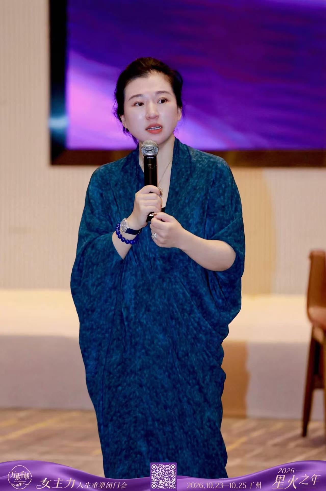

女主力，不是更拼命，而是更清楚。
安静，但有方向。
关于学院
一所为女性
而留的教室
万紫帆创立太太商学院，想留给女性一处不必表演坚强的地方。
人们习惯看见女性把家庭、关系与事业一同扛起，却很少为她留一间安静的教室。在这里，学习不是赶进度，而是把散落的经验收回来：哪些判断是你自己的，哪些期待是别人的，下一步可以小到什么程度，仍然算数。
我们把这样的状态称作女主力。它不是把所有重量揽在身上，而是知道自己要走向哪里，并愿意为那条路负责。
二〇二六年，是星火之年。星火不必很大，却足以照见下一步。人生重塑闭门会，是这一年里的一场相聚。人不多，话可以说完。
为谁而来
若你在这几句里停了一下
这场邀请或许是写给你的。
-
01
身在多个角色里
伴侣、母亲、女儿，或团队里总被依靠的那一位。你把这些角色做得认真，却很少被问：若只谈你自己，你想怎样生活。
-
02
经验已经足够多
你走过一段不短的路。你希望这些经历留下来，成为自己用得上的方法，而不是夜里反复的消耗。
-
03
想要说得完的谈话
你不需要更热闹的场。你需要人数刚好的一群人，愿意把话说实，也听得进去。
-
04
想重塑，而不想掀翻
你不是来否定自己的生活。你是想重新排列事业、关系与自我的次序，然后走得更稳。
签名场次 · 星火之年
人生重塑闭门会
广州 · 2026
三天，一个小房间，一段不被催促的时间。闭门，是为了把注意力留在现场。
-
壹
看见
从日常角色里退半步，看清自己正站在哪里。
-
贰
重整
把事业、关系与自我摊开。决定什么留下，什么可以轻轻放下。
-
叁
启程
带着一件做得到的事离开。不带走口号。
这场聚会的规模不大，好让谈话留得住。我们不在页面上标价，也不预先许诺结果。具体安排，以现场为准。
联络
若这份邀请
与你有关
请用活动海报底部的二维码，与万紫帆联系。丝带中央那一枚，即是入口。
本页不设表单，不收集姓名、电话或其他个人资料。
万紫帆
二维码见海报